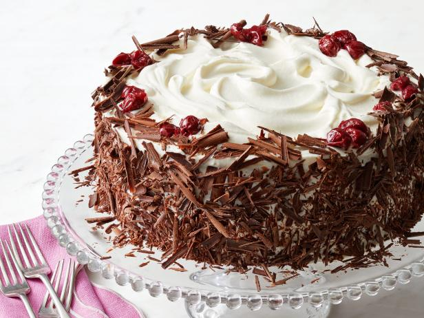

Learn Baking... in just few steps
Learn Baking... in just few steps|  Blackforest Cake | ||||
Ingredients |
|
| 2 1/8 cups all-purpose flour | 2 cups white sugar |
| 3/4 cup unsweetened cocoa powder | 1 1/2 teaspoons baking powder |
| 3/4 teaspoon baking soda | 3/4 teaspoon salt |
| 3 eggs | 1 cup milk |
| 1/2 cup vegetable oil | 1 tablespoon vanilla extract |
| 2 (20 ounce) cans pitted sour cherries | 1 cup white sugar |
| 1/4 cup cornstarch | 1 teaspoon vanilla extract |
| 3 cups heavy whipping cream | 1/3 cup confectioners' sugar |
Ingredients |
|
| 1 cup plain soy milk | 1 tablespoon apple cider vinegar |
| 1 1/2 cups unbleached all-purpose flour | 1 cup white sugar |
| 1 teaspoon baking soda | 1 teaspoon baking powder |
| 1/2 teaspoon salt | 1/3 cup canola oil |
| 1/4 cup water | 1 tablespoon lemon juice |
| 1 tablespoon vanilla extract | 1/4 teaspoon almond extract |
Ingredients |
|
| 4 eggs | 1 (18.25 ounce) package devil's food cake mix |
| 1 cup sour cream | 1 cup vegetable oil |
| 1/2 cup warm water | 1 (5.9 ounce) package instant chocolate pudding mix |
| 2 cups semisweet chocolate chips |